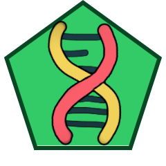
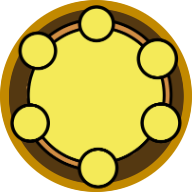

01EL DRAFT
Tu primera selección.
Recibe 10 cartas. Elige 2 y pasa el resto. Repite hasta reunir los 10 organismos con los que empezarás la partida.
ELIGE · CONSERVA · PASA40 ORGANISMOS. UN MAZO POR DESCUBRIR.
Del cóndor a la bacteria: descubre la vida que hay detrás de cada carta.
Cargando la colección…
Desliza para explorar · Pulsa la carta central para descubrir más
Ilustraciones originales de BioteCard · Edición en desarrollo
EL ARCHIVO DE BIOTECARD
De los grandes animales a la vida microscópica. Explora todos los organismos de la colección.
40 cartas
Prueba con otro nombre, número o grupo.
Prepara tu mano, coloca tus organismos y suma puntos con sus condiciones. Estas son las tres fases de una partida.
Recibe 10 cartas. Elige 2 y pasa el resto. Repite hasta reunir los 10 organismos con los que empezarás la partida.
ELIGE · CONSERVA · PASAJuega una carta por ronda, activa su habilidad y busca su lugar en el ecosistema. La baza más alta suma 2 puntos.
9 RONDAS PARA CONSTRUIRComprueba qué organismos cumplen sus condiciones. Sus estrellas se suman a tus puntos de baza. Gana el total más alto.
ESTRELLAS + PUNTOS DE BAZARECURSOS METABÓLICOS
Amplía el espacio, cambia posiciones o renueva las cartas de tu mano.

GENExpande tu tablero

ATPReorganiza tus cartas
Renueva tu mano
ANTES DE LA PRIMERA BAZA
Consulta la preparación, los turnos y la puntuación.
Resumen basado en el manual inicial. Las cartas están en desarrollo.